Game-Guide
What is Liquid Sands?
Liquid Sands is a round based strategy game
What is the game all about?
The game is about fighting and trading to conquer all avaliable resources to win the game.
What are the rules?
German
- Momentan können am Spiel 2 Spieler teilnehmen."
- Gewinner ist wer als letzter überlebt oder die meisten Waren hat (noch nicht fertig implementiert!)."
- Jeder Spieler bekommt eine Farbe zugewiesen und seine Spielfiguren werden in dieser Farbe markiert mit einem Symbol über der Einheit."
- Der Spieler der momentan dran ist erkennt das an der kreisenden Markierung über seinen Einheiten."
- Ob die eigene Einheit in dieser Runde bereits gezogen wurde erkennt man dadurch, dass das Symbol über dem Kopf nicht mehr kreist."
- Abhängig von der Karte haben die Spieler bis zu 5 Einheiten mit unterschiedlichen Eigenschaften zur Verfügung."
- Eine Eigenschaft ist z.B. die Reichweite in der eine Einheit laufen kann pro Zug oder die Last die sie tragen kann."
- Die Sichtweite der Einheiten ist durch einen Nebelschleier begrenzt, der Felder außerhalb der Sichtweite verdeckt."
- Zuerst beginnt der Spieler mit der grünen Farbe."
- Das Spiel verläuft in Runden, d.h. die Spieler sind abwechselnd dran und jede Einheit darf pro Runde nur einmal gezogen werden."
- Eine Runde ist vorbei, sobald alle Figuren einen Zug vollendet haben."
- Ein vollendeter Zug besteht aus folgenden Handlungen:"
- Bewegen einer Figur bis zu ihrer aktuellen Maximalreichweite, danach können optional folgende Handlungen ausgeführt werden:"
-
- Falls am Ende des Bewegens neben der Figur eine andere Einheit steht, dann kann noch mit dieser Figur gekämpft oder gehandelt werden unabhängig davon, ob es eigene oder gegnerische Einheiten sind."
- Kampf oder Handel wird gestartet durch die Buttons am rechten Rand 'Fight/Trade' und dann durch einen einfachen Mausklick auf die benachbarte Einheit."
- Falls am Ende des Bewegens keine andere Figur neben der bewegten Einheit steht, ist der Zug vorbei."
- Sobald der Zug vorbei ist markiert man das mit dem Button 'I'm done with my move' oben rechts."
- Das Bewegen der eigenen Einheit kann nach folgenden Methoden ablaufen:"
- Falls der selektierte Pfad den die Einheit zurück legen soll länger ist, als die pro Runde erlaubte Maximalreichweite, dann besteht die Möglichkeit Bewegungen zu planen:"
-
- Entweder in der nächsten Runde automatisch den markierten weg weiter laufen ohne Nachfrage (automatischer Modus)."
- oder nochmal nachgefragt zu werden, ob der Weg auch tatsächlich weiter verfolgt werden soll der vorher markiert wurde (manueller Modus)."
- Das Planungsmenü für die Bewegung erscheint durch selektieren einer Einheit dann eines Pfads mit einfachem Mausklick und danach durch einen Rechtsklick."
- Mit 'Undo' und 'Redo' kann die Pfad-Markierung auch rückgängig gemacht oder wiederholt werden."
- Das vollenden des Spiels ist momentan noch nicht fertig implementiert, daher kann es nur manuell beendet werden."
| 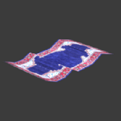 |
"Jussuf" the flying carpetEvery child knows those standard flying rugware devices utilized by hurried merachants to serve their time-pressing business dealings. As he is anyting but one of such low-quality rugware devices, don't ever dare dare to confuse "Jussuf" with one of those. "Jussuf" is a beast that has a soul. Beware of the anger you will pull upon you if he ever finds out you try to compare him to such a lifeless thing as a carpet. His speed and his agility make up for the rather low capacity he is capable to transport. |
| 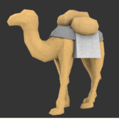 |
"Kalli" the camelAlthough his best times have already passed by, "Kalli" is still one of the most valuable companions you might wish to take along in the desert, unbeaten as well in loyalty as in experience. It might seem brave "Kalli" is just another camel, like those seen on daily markets. But take him with you just for a day and you will see he makes for one of the most priceless friends you can depend on at all costs. Due to the years "Kalli" has already seen pass by he might have lost some of speed but he will still carry almost any weight you might offer without a moan. |
| 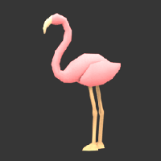 |
Falmingo-lady "Rosa"As she originates from the far away lands of Jauq'al-Har, "Rosa" might be one of the most exotic birds ever to be seen in the deserts. Sheik Mussalah-Yissin ibn Salah-Masri al Kwasami brougt her from one of his numerous journeys, as she and her sisters were presented him as a gift. Don't be fooled by her lovely and fragile appearence. By the lightweight design of her body she is one of the fastest and makes one of the best scouts you might wish for and her pecker is mighty sharp. |
| 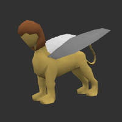 |
"Semira" the sphinxAs an egytian god Semira is a powerfull fighter which shows no merci with any enemy below a god! As an half eagle and lion she combines power and speed in one unit. |
| 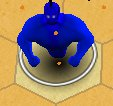 |
"JinJin" the ghost of on ancient magician.JinJin is the dead ghost of an evil ancient magician who looks only for revenge no matter who's the enemy. As a ghost JinJin is not limited by any physical law and can move fast among the earth surface to fight his enemies to the death. |
Interface Overview?
| Item from the Game | Meaning |
| 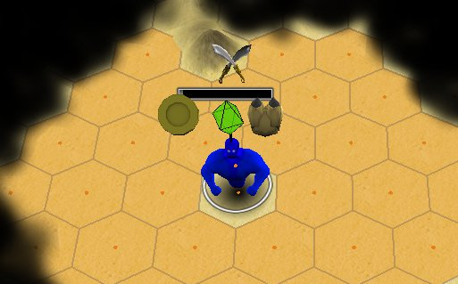 | This is one of your complete player units which consists of many different parts, which we will cover below. |
| 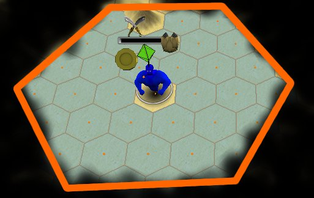 |
All player units have a unique range which is limited by a fog surrounding them. This fog prevents seeing the other player units for tactical reasons. In order to determine where the enemy units are you have to explore the map which will unconver the range around your units. |
To select a unit you need to klick on it. The selection will be indicated by a circle around the player. |
|
| 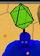 |
Each unit has a marker above their heads which has a color which indicates the owner of the unit. And each player has a separate color, so all units with the same color belong to one player. This marker always rotates to indicate the current players turn. |
| 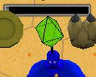 |
Above each unit is a lifebar which can be reduced if the unit is attacked by another unit, no matter if by an enemy or own unit. |
| 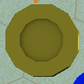 |
The symbols above the players head provide ations that can be accomplished in the current turn. A mouse click on this symbol and then on an adjacent unit will start a trade. |
| 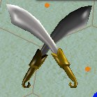 | A mouse click on this symbol and then a click on an adjacent unit will start an fight. |
| 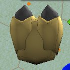 | A mouse click on this symbol allows you to mark a path on the game board and to walk the path. |
| 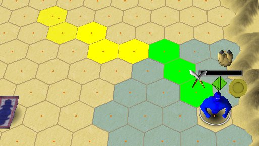 |
Once you are in selection mode you can select any path on the field and also undo or redo the selctions with the buttons on the right side. The different colors on the selection indicate your limited range within one move. Which means you can walk within this round only the green colored path. |